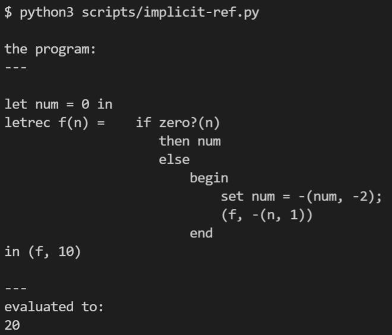
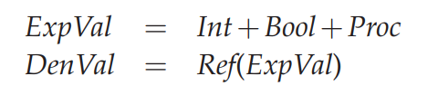

IMPLICIT-REFS: A Language with Explicit References¶
IMPLICIT-REFS 隐式 reference 风格的语言有很多，比如我们日常遇到的java，python。
看下语法
syntax:
Program ::= Expression
a-program(exp1)
Expression ::= Number
const-exp(num)
Expression ::= - (Expression, Expression)
diff-exp(exp1, exp2)
Expression ::= zero? (Expression)
zero?-exp(exp1)
Expression ::= if Expression then Expression else Expression
if-exp(exp1, exp2, exp3)
Expression ::= Identifier
var-exp(var)
Expression ::= let Identifier = Expression in Expression
let-exp (var, exp1, body)
Expression ::= proc (Identifier) Expression
proc-exp (var, body)
Expression ::= (rator, rand)
call-exp(rator, rand)
Expression ::= letrec Identifier (Identifier) = Expression in Expression
letrec-exp (p-name b-var p-body letrec-body)
Expression ::= set Identifier = Expression
assign-exp (var exp1)
语法上只增加了一个 set 表达式
再看下运行效果：
算法很简单，n每减1，num 加2，直到n为0，然后输出num，这是很明显的 implicit reference。
在implicit-refs里面，可以直观地看出 expval和denval的区别
变量现在只能是 reference
针对implicit reference的语言，这里首先问的问题是，我手上有一个变量var，我对其求值需要做 哪些操作？
分2步走：
取得var对应的reference对象
根据reference对象取得其引用的内容
和 variable 有关的表达式有：VarExp，LetExp，CallExp，LetRecExp
if isinstance(exp, LetExp):
v1 = evaluate(exp.exp1, env)
ref = new_ref(v1)
return evaluate(exp.body, ExtendEnv(exp.name, ref, env))
if isinstance(exp, ProcExp):
return ProcVal(exp.var, exp.body, env)
if isinstance(exp, CallExp):
proc_val = evaluate(exp.rator, env)
procedure = proc_val.to_proc()
rand_val = evaluate(exp.rand, env)
ref = new_ref(rand_val)
return evaluate(procedure.body, ExtendEnv(procedure.var, ref, procedure.env))
if isinstance(exp, LetRecExp):
return evaluate(exp.letrec_body, LetRecEnv(exp.p_name, exp.b_var, exp.p_body, env))
LetRec的核心处理在这
class LetRecEnv(Env):
def __init__(self, p_name, b_var, p_body, saved_env: Env):
self.p_name = p_name
self.b_var = b_var
self.p_body = p_body
self.saved_env = saved_env
def apply(self, var):
if var == self.p_name:
ref = new_ref(ProcVal(self.b_var, self.p_body, self))
return ref
else:
return self.saved_env.apply(var)